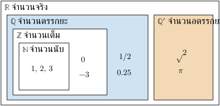
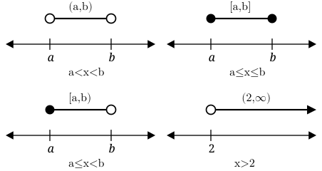
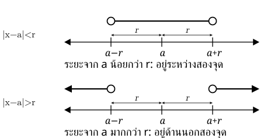
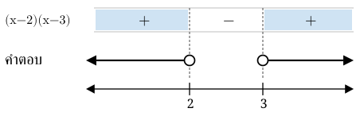

. จำนวนจริงและชนิดของจำนวน
จำนวนจริงคือจำนวนที่แทนตำแหน่งบนเส้นจำนวนได้ เช่น , , และ แบ่งเป็นสองกลุ่มใหญ่ คือ
- จำนวนตรรกยะ เขียนเป็นเศษส่วนของจำนวนเต็มได้ โดยตัวส่วนไม่เป็นศูนย์ เช่น , , รวมถึงทศนิยมซ้ำ
- จำนวนอตรรกยะ เขียนเป็นเศษส่วนของจำนวนเต็มไม่ได้ ทศนิยมไม่สิ้นสุดและไม่ซ้ำ เช่น และ
จำนวนนับเป็นส่วนหนึ่งของจำนวนเต็ม จำนวนเต็มเป็นส่วนหนึ่งของจำนวนตรรกยะ และจำนวนตรรกยะเป็นส่วนหนึ่งของจำนวนจริง
โดย

ระวัง: จำนวนที่ติดเครื่องหมายรากไม่ได้เป็นอตรรกยะทุกจำนวน เช่น เป็นจำนวนเต็ม
. ช่วงและอสมการ
อสมการใช้บอกว่าจำนวนใดเป็นคำตอบ เช่น หมายถึงจำนวนจริงทุกจำนวนที่มากกว่า เราเขียนคำตอบนี้เป็นช่วงได้ว่า
- หมายถึง ไม่รวมปลายทั้งสอง
- หมายถึง รวมปลายทั้งสอง
- หมายถึง รวม แต่ไม่รวม
วงเล็บเหลี่ยมหมายถึง รวมค่านั้น ส่วนวงเล็บกลมหมายถึง ไม่รวมค่านั้น และใช้วงเล็บกลมกับ และ เสมอ

การแก้อสมการคล้ายการแก้สมการ แต่มีข้อสำคัญคือ เมื่อคูณหรือหารทั้งสองข้างด้วยจำนวนลบ ต้องกลับเครื่องหมาย
เช่น เมื่อหารด้วย จะได้
คูณ/หารด้วยตัวแปร: ต้องรู้เครื่องหมายก่อนตัดสินว่ากลับเครื่องหมายอสมการหรือไม่
. ค่าสัมบูรณ์
คือระยะจาก ถึง บนเส้นจำนวน จึงมีค่าไม่ติดลบ เช่น และ
ในทำนองเดียวกัน คือระยะจาก ถึง เมื่อ จะได้ว่า
- หมายถึง หรือ
- หมายถึง
- หมายถึง หรือ
ระยะน้อยกว่า อยู่ระหว่างสองจุด; มากกว่า อยู่ด้านนอก

ถ้าเป็น หรือ ให้รวมจุดปลายด้วย
. พหุนามและสมการ
พหุนาม เช่น สามารถเขียนเป็นผลคูณได้ว่า การเขียนแบบนี้เรียกว่า การแยกตัวประกอบ
สูตรที่ช่วยแยกตัวประกอบ ได้แก่
เมื่อผลคูณเป็นศูนย์ จะมีตัวประกอบอย่างน้อยหนึ่งตัวเป็นศูนย์ เช่น
จึงได้ หรือ
สำหรับสมการกำลังสอง เมื่อ ใช้สูตรได้ว่า
ค่า ช่วยบอกจำนวนคำตอบในระบบจำนวนจริง: เป็นบวกมีสองคำตอบ เป็นศูนย์มีหนึ่งคำตอบ และเป็นลบไม่มีคำตอบที่เป็นจำนวนจริง
. อสมการพหุนามและอสมการเศษส่วน
ถ้าโจทย์ถามว่าพหุนามหรือเศษส่วนเป็นบวกหรือลบ เราต้องหาว่า แต่ละช่วงมีเครื่องหมายอะไร
แยกตัวประกอบ → หาศูนย์ของแต่ละตัว → แบ่งช่วง → ตรวจเครื่องหมาย → เลือกช่วงตรงอสมการ
ตัวอย่างเช่น ต้องการให้ผลคูณเป็นบวก จึงเกิดได้เมื่อทั้งสองตัวเป็นบวก หรือทั้งสองตัวเป็นลบ ได้คำตอบ หรือ

ระวังสองเรื่อง
- ถ้าเป็นเศษส่วน ค่าที่ทำให้ตัวส่วนเป็นศูนย์ใช้ไม่ได้เสมอ
- ถ้าอสมการมีเครื่องหมาย หรือ อาจรวมค่าที่ทำให้ตัวเศษหรือพหุนามเป็นศูนย์ได้ แต่ยังห้ามรวมค่าที่ทำให้ตัวส่วนเป็นศูนย์
. แนวที่เลือกฝึก: หาเศษและตรวจตัวประกอบของพหุนาม
การหาเศษจากการหารพหุนามด้วย ทำได้โดยแทน ในพหุนาม
เขียนการหารในรูปต่อไปนี้เพื่อดูว่าเมื่อแทนค่าศูนย์ของตัวหารจะเหลืออะไร
แล้วแทน ส่วน จะเป็นศูนย์ จึงเหลือ
ดังนั้น
- ทฤษฎีเศษ: เมื่อหาร ด้วย เศษคือ
- ทฤษฎีตัวประกอบ: เป็นตัวประกอบของ ก็ต่อเมื่อ
เวลาอ่านโจทย์ ให้เริ่มจาก หาค่าที่ทำให้ตัวหารเป็นศูนย์ แล้วแทนค่านั้นลงในพหุนาม เช่น ตัวหาร เป็นศูนย์เมื่อ จึงต้องหา
ถามหารลงตัว → ตรวจว่าได้ศูนย์; ถามเศษ → ใช้ค่าที่แทนได้